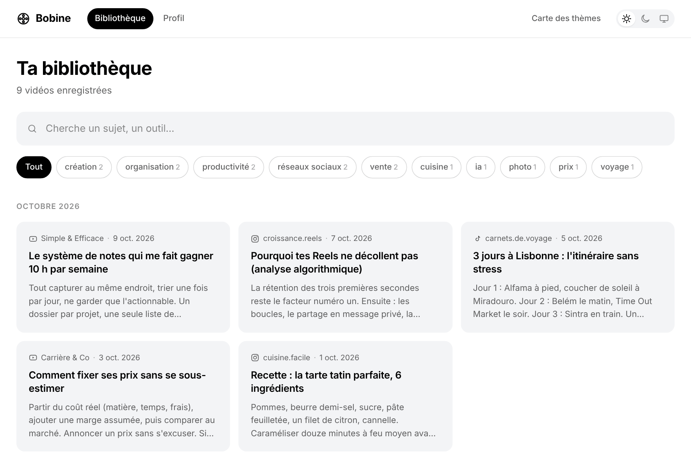
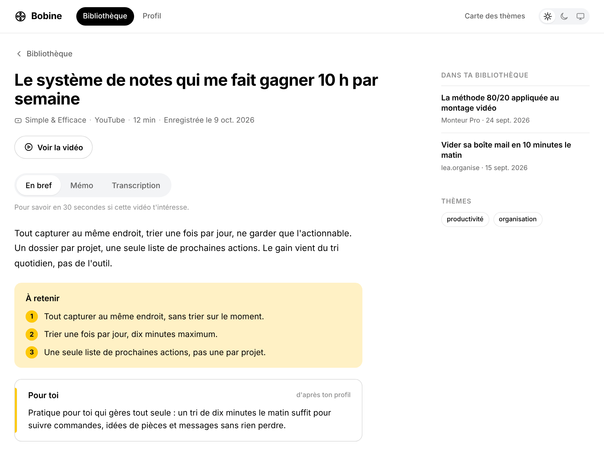

Tu partages
Depuis ton iPhone, envoie une vidéo Instagram, TikTok ou YouTube à ta boîte Bobine.
Une bibliothèque pour tes vidéos
Bobine transforme tes Reels, TikToks et vidéos YouTube en une bibliothèque personnelle, cherchable et à toi.

Tu partages une vidéo. Bobine la transforme en fiche. Tout reste chez toi.
Le principe
Depuis ton iPhone, envoie une vidéo Instagram, TikTok ou YouTube à ta boîte Bobine.
La vidéo est téléchargée, transcrite localement et résumée si tu le souhaites.
Recherche un mot, un thème ou une phrase dans ta bibliothèque et ouvre la bonne fiche.
Bobine recherche dans les titres, les résumés, les thèmes et les mots prononcés dans les vidéos.
Retrouve le résumé, les points importants, le mémo complet et la transcription, avec un lien vers la vidéo originale.

Une bibliothèque qui t’appartient
Bobine fonctionne sur ton Mac ou ton serveur. Les résumés IA sont facultatifs, et tu choisis le service utilisé.
Deux façons de commencer
La version la plus simple pour ta bibliothèque personnelle.
Une page accessible depuis plusieurs appareils, chez toi.
Prêt à essayer
Télécharge Bobine, suis le guide, puis partage ta prochaine vidéo. Tu peux ajouter les résumés IA plus tard.
Gratuit pour le téléchargement et la transcription locale. Les résumés IA sont optionnels.